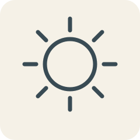
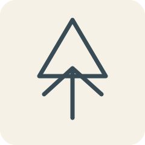
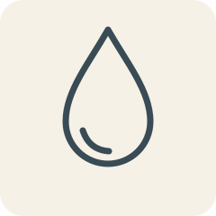
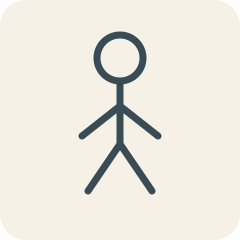
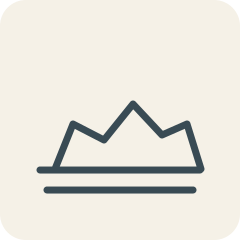
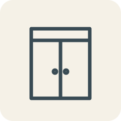
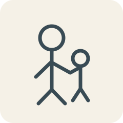
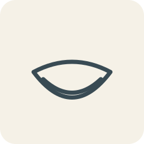

그림 문제 후보 12개 — 수동 검수
운영 공개 전 검수용. 작은 화면에서 그림의 의미를 식별할 수 있는지 확인하세요. 합격 여부는 자동 판정하지 않습니다.

日 태양8급 · original-sun.svg月 달8급 · original-moon.svg
木 나무8급 · original-tree.svg火 불8급 · original-fire.svg
水 물8급 · original-water.svg
人 사람8급 · original-person.svg
土 흙8급 · original-earth.svg
門 대문8급 · original-gate.svg
母 어머니와 아이8급 · original-mother.svg山 산7급 · original-mountain.svg
口 입7급 · original-mouth.svg手 손7급 · original-hand.svg검수 기준: 뜻 식별 가능 여부, 선명도, 정답과의 일치, 작은 화면에서의 구별 가능성. 체크 표시는 브라우저에 저장되지 않습니다.